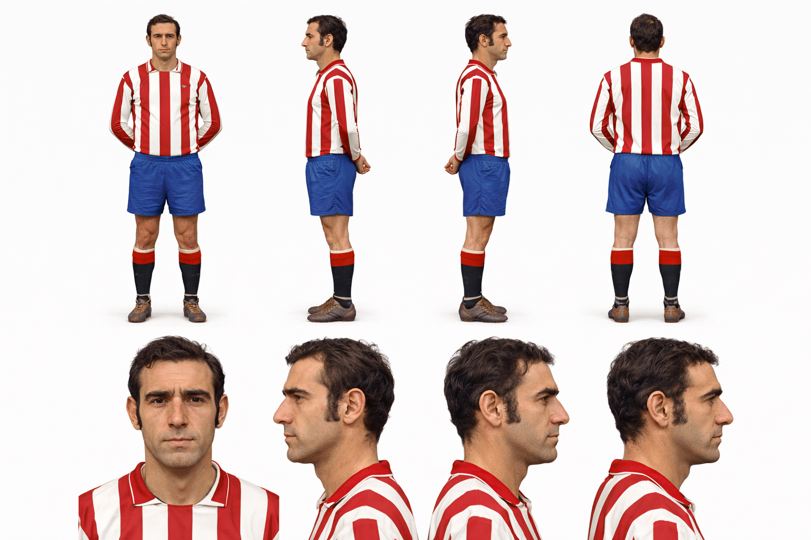
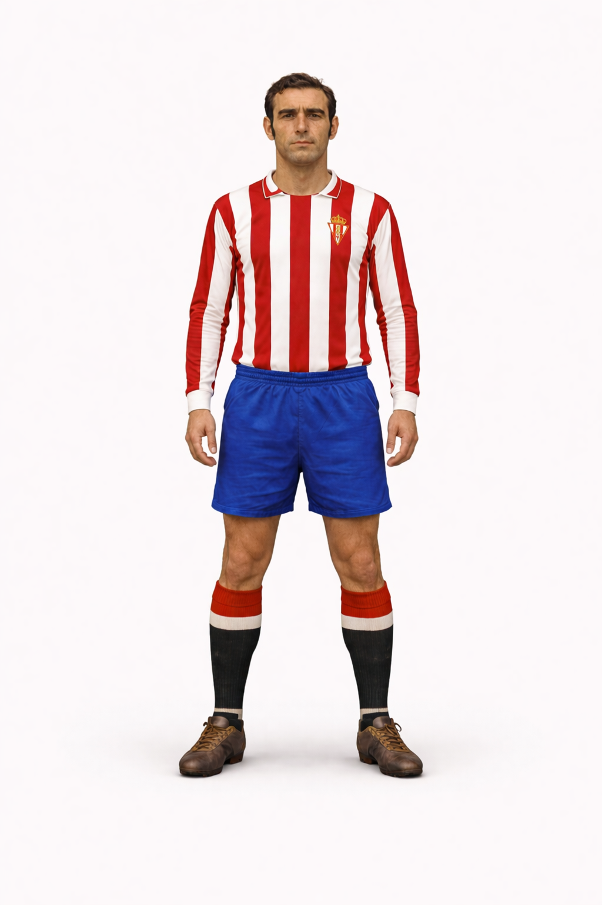

Quini
Guión
"Me llamo Enrique Castro González, aunque casi todo el mundo me conoce como Quini. Nací en Asturias y desde muy joven soñaba con jugar al fútbol en el equipo de mi tierra, el Real Sporting de Gijón. Cuando entré en el club siendo un chaval, no imaginaba todo lo que ese escudo llegaría a significar para mí.
Debuté con el primer equipo en 1968 y desde ese momento supe que estaba viviendo algo especial. Jugar en El Molinón, delante de nuestra afición, era una sensación única. Cada partido lo vivía con una mezcla de nervios, ilusión y orgullo por defender los colores rojiblancos. Poco a poco fui creciendo como delantero y empezaron a llegar los goles, algo que siempre fue mi manera de ayudar al equipo.
Con el Sporting viví algunos de los momentos más importantes de mi carrera. Llegué a ser varias veces máximo goleador de la liga española, algo que nunca habría conseguido sin mis compañeros y el apoyo de la gente de Gijón. Uno de los recuerdos más bonitos fue cuando el equipo consiguió el subcampeonato de liga en la temporada 1978-79. Aquello fue histórico para el club y para todos los que sentíamos el Sporting.
Para mí, el Sporting no fue solo un equipo; fue mi casa. Cada vez que marcaba un gol en El Molinón sentía que lo celebraba con toda Asturias. Incluso cuando jugué fuera durante algunos años, el cariño de la gente del Sporting siempre estuvo presente.
Con el paso del tiempo volví a vestir la camiseta rojiblanca y pude despedirme del fútbol donde todo empezó. Mirando atrás, lo que más me enorgullece no son solo los goles o los premios, sino haber representado a mi tierra y haber hecho felices a tantos aficionados del Real Sporting de Gijón.
Porque al final, más que un delantero, siempre me sentí uno más entre la gente que amaba al Sporting tanto como yo."
Hoja de referencia

Personaje
